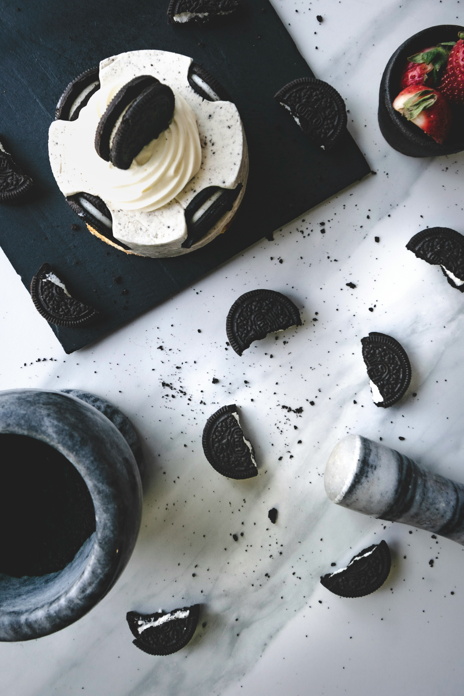

Oreo Cheesecake

Oreo Cheesecake
This Oreo cheesecake is easy to prepare and a great dessert to bring to your next get-together.
Ingredients
- 24 Oreos
- 3 tablespoons butter, melted
- 3 (8 ounce) packages Philadelphia Cream Cheese, softened
- ¾ cup sugar
- 1 teaspoon vanilla essence
- 3 large eggs
Steps
- Gather all ingredients. Preheat the oven to 175 degrees C.
- Place 16 cookies in a resealable plastic bag. Flatten bag to remove excess air, then seal bag. Finely crush cookies by rolling a rolling pin across the bag.
- Place crushed cookies in a bowl. Add melted butter; mix well.
- Press mixture firmly onto bottom of a 9-inch springform pan.
- Beat cream cheese, sugar, and vanilla in a large bowl with an electric mixer on medium speed until well-blended.
- Beat in eggs, 1 at a time, until just blended.
- Chop remaining 8 cookies; gently stir 1/2 of the chopped cookies into cream cheese batter.
- Pour over prepared crust; sprinkle remaining chopped cookies on top.
- Bake in the preheated oven until center is just set, about 45 minutes.
- Refrigerate for 3 hours to overnight. Cut cheesecake into 12 equal pieces; store leftovers in the refrigerator.